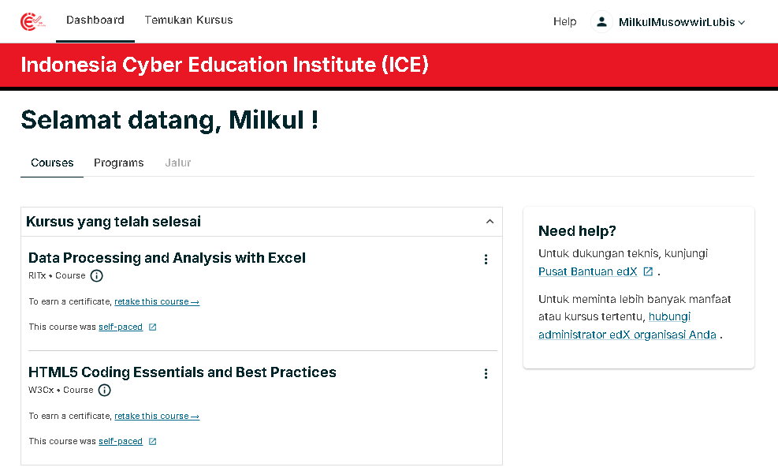
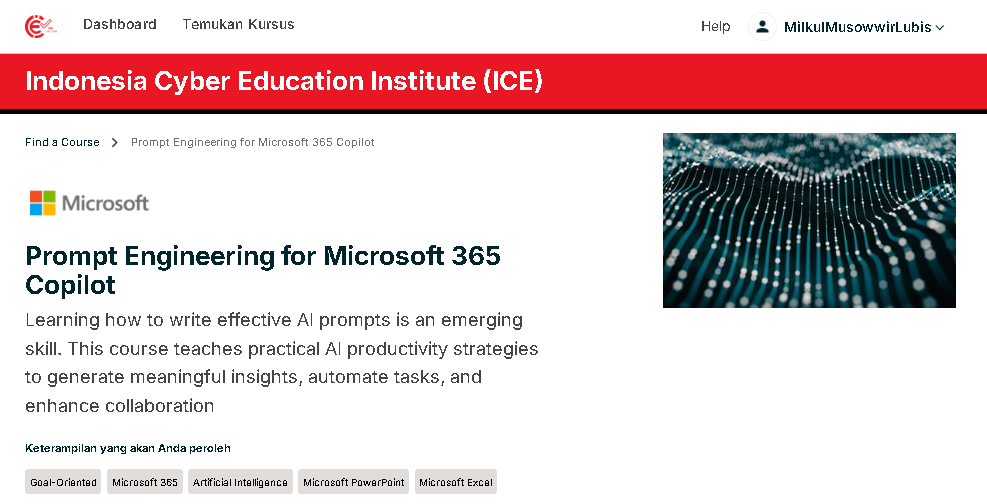
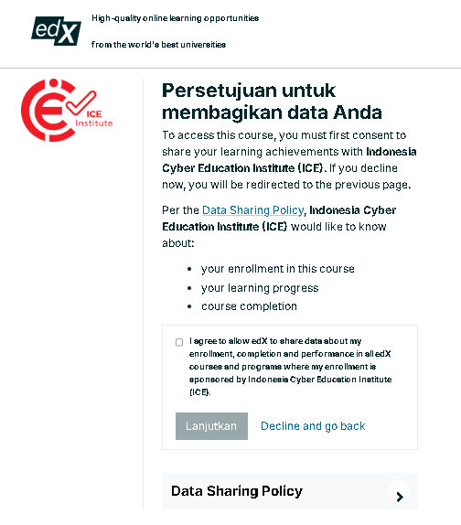
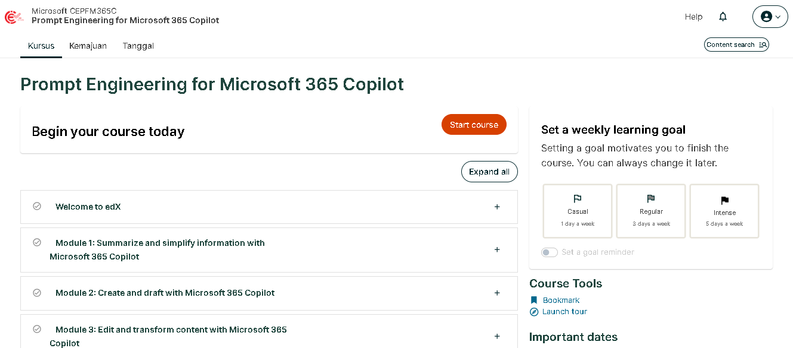
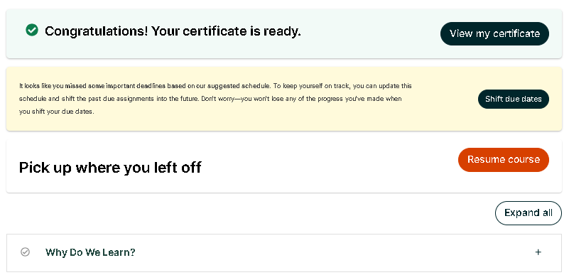

Panduan Mempelajari Modul
Pada panduan ini terdapat 2 langkah yang harus diikuti untuk mempelajari Modul
A.Membuat Akun
B.Mulai Belajar
A. Membuat Akun
Dalam proses pembuatan akun, Anda harus memperhatikan alamat email Anda. Alamat email yang Anda gunakan saat membuat akun harus sama dengan alamat email yang didaftarkan oleh perguruan tinggi Anda saat mendaftar pada Program Kemdiktisaintek Tendik Berdampak: Penguatan Kompetensi dan Profesionalisme. Berikut ini langkah-langkah membuat akun:
1. Klik Url berikut Go to Modul. Kemudian Anda akan diarahkan ke halaman baru seperti gambar dibawah ini (Gambar1)
Gambar1

Isi semua kolom dimulai dari
| Full Name | Masukkan nama asli Anda, sesuai dengan Kartu Identitas (KTP/SIM/Paspor). Nama ini akan digunakan untuk sertifikat. (Contoh: Budi Santoso) |
| Public Username | Ini adalah nama panggilan unik Anda untuk masuk/login ke sistem. Buatlah gabungan huruf/angka tanpa spasi, dan tidak harus sama dengan Nama Lengkap Anda. (Contoh: BudiS1995) |
| Gunaan Alamat email yang sama dengan yang didaftarkan oleh perguruan tinggi Anda pada Program Kemdiktisaintek Tendik Berdampak: Penguatan Kompetensi dan Profesionalisme | |
| Password | buat password yang mudah Anda ingat untuk nanti masuk sedalam Akun Anda |
| Country | Pilih Negara Indonesia |
Klik tombol Create Account untuk melanjutkan proses pembuatan akun
2. Kemudian Anda harus mengaktifkan akun yang baru saja Anda buat dengan membuka email Anda dan melihat pesan baru, seperti gambar di bawah ini. (Gambar 2).
Gambar 2

3. Klik tombol Confirm my email untuk melanjutkan proses aktivasi akun.
B. Mulai Belajar
Pada tahap ini, Anda dapat mulai mempelajari Modul.
Pastikan Anda telah membuat akun. Jika belum, Anda dapat kembali ke tahap ini A. Buat Akun.
Langkah-langkah untuk memulai belajar:
PERHATIAN ANDA AKAN MENERIMA EMAIL DARI ICE INSTITUTE YANG BERISI 2 LINK.
- LINK JOIN
- LINK AKSES MODUL
PASTIKAN ANDA MENGECEK FOLDER INBOX, JUNK, SPAM, PROMOSI PADA EMAIL ANDA
Baca dan pahami Panduan dibawa ini dengan seksama dan teliti agar anda sukses mengakses Modul
1. Klik LINK JOIN yang diberikan melalui email Anda. Lalu login ke Akun Anda. hingga muncul halaman seperti gambar dibawah ini (Gambar 3).
Gambar 3

2. Setelah berhasil lalu kembali lagi ke Email Anda dan Klik LINK AKSES MODUL, hingga terbuka halaman modul anda seperti gambar dibawa ini (Gambar 4)
Gambar 4

3. Scroll halaman kebawah hingga Anda menemuk tombola Enroll. Lalu klik tombola enroll hingga tampil halaman pernytaan seperti dibawa ini (Gambar 5)
Gambar 5

4. Check List bagian I agree to allow edX to share data about my enrollment, completion and performance in all edX courses and programs where my enrollment is sponsored by Indonesia Cyber Education Institute (ICE). Tombol Lanjutkan/Continue. dan Anda akan dialihkan ke halaman awal Course seperti gambar dibawah ini. (Gambar 6)
Gambar 6

3. Klik Tombol Start Course, untuk memulai mempelajari Modul Anda.
Catatan :
- Anda harus menyelesaikan seluruh Modul Anda tepat waktu hingga mendapatkan sertifikat
- Menu Progress yang berada diatasi halaman Modul merupakan informasi Nilai dari setiap Asessment yang Anda kerjakan serta nilai minimum yang harus anda capai untuk mendapatkan sertifikat.
-
Saat Anda berhasil menyelesaikan dan mencapai nilai minimum Modul, Anda akan melihat tampilan seperti gambar dibawa ini
 - Klik tombol View My Sertifikat untuk melihat Sertifikat Anda
-
atau Anda dapat mengecek seluruh sertifikat yang Anda dapatkan dengan cara klik menu Profil yang berada disudut kanan atas